Website Evaluation
- First Impressions
- Navigation
- Content
- Attractors
- Findability
- Making Contact
- Browser Compatability
- Knowledge of Users
- User Satisfaction
- Other Useful Information
Adapted from: http://www.mcil.co.uk/review/7-10-criteria.htm
First Impressions
- URL (Intuitive)
- Download time
- Look and feel
- Need to download software
- Home page on one screen (above the fold) - n.
- Unique Selling Point (USP) or Value Proposition
- Ability to take action (Key action point – KAP)
- Feeling of wanting more
- Contact details
- Credential validation
- Statement from management
Adapted from: http://www.mcil.co.uk/review/7-10-criteria.htm
Navigation
- Ease of use
- Site map
- Return to Home Page from any page
- Internal search engine
- Internal links
- Broken links
- Text as well as graphic links (ALT tags)
- Navigational links visible
Adapted from: http://www.mcil.co.uk/review/7-10-criteria.htm
Content
- Useful information
- Degree of substantiated information
- Level of interaction
- Use of graphics, animation and sound
- Reviews, testimonials and certifications
- Content in digestible quantity
- Up-To-Date
- Available in Multiple Languages
- Accessibility for disabled people
- Terms and conditions
- FAQ’s
- Availability of follow up discussion
Adapted from: http://www.mcil.co.uk/review/7-10-criteria.htm
Attractors
- Competitions
- Special Offers
- Freebies
- Breaking News
- Providing External links
- Newsletter
- Other (Specify)
Adapted from: http://www.mcil.co.uk/review/7-10-criteria.htm
Findability
- Intuitive URL
- Intuitive keywords
- Use of Meta tags
- Use of frames (bad idea)
- On-line advertising
- On-line recommend a friend
- Partner and affiliate sites
- Off-line advertising
Adapted from: http://www.mcil.co.uk/review/7-10-criteria.htm
Making Contact
- E-mail and other details visible
- Response time to inquiries (automated or personal)
- Use of on-line forms
- Telephone contact numbers provided
- Telephone call back offered
Adapted from: http://www.mcil.co.uk/review/7-10-criteria.htm
Browser Compatability
- IE, Chrome, Firefox, Safari, Opera
- Mobile
- Tablet
Adapted from: http://www.mcil.co.uk/review/7-10-criteria.htm
Knowledge of Users
- Adaptive website - An adaptive website will remember the buying preferences of the users.
- Offers based on buying history
- Availability of utilization statistics
Adapted from: http://www.mcil.co.uk/review/7-10-criteria.htm
User Satisfaction
- Robustness/reliability of the site i.e. is the site frequently crashing or off-line.
- Clicks to completion
- Acknowledge order/request
- Order/request tracking online
- Does the cookie fill the form?
Adapted from: http://www.mcil.co.uk/review/7-10-criteria.htm
Other Useful Information
- Supplier terms and conditions
- List of products previously bought by your company
- Contact details for person in charge of suppliers
- List of current career opportunities with the company
- Contact details for HR department
- Financial results
- Up-to-date financial news
- The Company stock price performance
- History of the company
- Management and geographical structure of company
- Mission statement
- Up-to-date press coverage.
Adapted from: http://www.mcil.co.uk/review/7-10-criteria.htm
Questions?
Professional Chrome
I use the term `Professional Chrome' to describe aspects of website design and production that make a website look `professional'. This is not an easy area to pin down as it is as much about fashion and trend as it is about good design.
- Footers
- Social Network Links/Feeds
- Cookie confirmation
- Icons
- URLS
Footers - Professional Chrome
Footers have developed into the 'small print' area of websites. However by being a little creative, they can do a lot more. Footers typically include:
- Privacy Policy, Data Policy, Copyright Policy
- Terms of Use
- Latest Updates, Latest News, RSS feeds
- Simplified Navigation
- Company Legal Information (SI 49 of 2007)
- Copyright and Author
Footers - Professional Chrome

Wall Street Journal Online http://uk.wsj.com/home-page
Footers - Professional Chrome
 http://www.rte.ie/
http://www.rte.ie/
Social Networks - Professional Chrome
Links to Social Networks are quite easy to achieve, however more complex functionality typically involves linking to the Social Networks API.

http://www.hongkiat.com/blog/free-social-media-icon-sets-best-of/
Social Networks - Professional Chrome
Facebook Like Box
- The Facebook API is a fairly easy one to implement. Register in the Facebook Developers Network to get started.
- Once setup on the FB side, the implementation typically involves linking to the FB API with your unique code.
- See https://developers.facebook.com/docs/reference/plugins/like-box/
Cookie Confirmation - Professional Chrome
EU Directive 2009/136/EC amended a previous directive concerned with the protection of privacy in electronic communications. This had the effect of creating a need to introduce user authorization to store cookies on the users machine.

Eircom Cookie Confirmation
A useful resource are:
Icons - Professional Chrome
Icons can aid internationalization and improve the design of a site. The example below can be modified to suit your site color scheme.

http://dryicons.com/free-icons/
Another useful resource is openiconlibrary.sourceforge.net
URL - Professional Chrome
The URL used gives a very strong sense of competence, if you know what to look for.
Good
Bad
URL - Professional Chrome
- The issue of URL is more than just aesthetic. It speaks to the structure of the website
- The RTE example indicates the use of an MVC pattern implementation
- The ability to see `?',`\%20' and other codes indicates a database driven website. However leaving this information on the URL exposes the database, and would be one of the first points of attack by a hacker.
Security and Patterns are beyond the scope of this module.
Questions?
Composition
Whilst there are no hard and fast rules in relation to composition, research has shown that using some of that certain ways of doing things work better than others.
What follows is a very short introduction into a very large and interesting field.
Line - Composition
- Lines can be real or implied.
- They are typically used to divide space
- They can also be used to draw the eye to a point of interest
Form (shape) - Composition
- For much of our work we use rectangles.
- Proportion is important: golden ratio $\varphi = 1.618$
- Try not to have forms clashing.
Texture - Composition
- Type of visual background, typically a repeating detail, but may be a large image.
- Typically paper, stone, etc.
- Use with caution; can send a very strong message.
Texture - Composition

Image Background http://www.cricketireland.ie/
Color - Composition
- Extremely powerful, very easy to get wrong.
- Lots of theory on color and mood.
- Will be the subject of a separate lecture.
Color - Composition

Note Color and Contrast http://www.backtrack-linux.org/
Space (Positive & Negative) - Composition
- Balance areas of information with areas of nothing
- Too much negative space may look stark
- Too much positive space may look cluttered
- Negative space can be used to great effect as can be seen with Google.
Positive Space - Composition

Too much positive space http://www.gramophone.co.uk/
Negative Space - Composition

Use of negative space, stark? http://riotdesign.eu/
Balance - Composition
- Describes how elements are organized over the page.
- Three (3) types of balance: symmetrical, asymmetrical, radial
- Symmetrical - Same shapes, axis identifiable
- Asymmetrical - May contain symmetry, but asymmetrical elements add visual interest
- Radial - Central point with sections radiating from it. Difficult to code.
Balance - Composition

Asymmetrical, Strong left bias http://https://myspace.com/
Dominance & Priority - Composition
- We have three main levels, Primary, Secondary and Tertiary elements
- Primary is reserved for headings
- Secondary is images, video, used to reinforce the main content and Primary elements
- Navigation may also be a secondary element
- Tertiary elements may be footers, blog entries etc.
- Use to create a Focal Point
- Use a single image to create visual impact (typically on landing page)
Dominance & Priority - Composition

Color is dominant here! http://www.thebigtest.org/
Proportion - Composition
- Deals with the size of elements
- Implies a sense of importance
- May unbalance the site
- Works in conjunction with Dominance and Priority
- Tertiary elements may be footers, blog entries etc.
Proportion - Composition

What is important here? http://www.thesun.ie/irishsol/homepage/
Contrast - Composition
- Helps elements stand out from one another
- Contrast is set through color

Note the red buttons http://www.usa.gov/
Rhythm & Flow - Composition
- The way the eye moves through the elements.
- Logical pattern, left-right or top-bottom
- Z-layout
- F-layout
Z-Layout - Composition

Z-Layout https://www.surveymonkey.com/
F-Layout - Composition

Harmony & Unity - Composition
- Everything should work together.

Questions?
Illusions and Perception
based on the lecture of Dorothy Stokes-Cleary, University of Limerick
Gestalt Laws - Composition
- Closure - we close open shapes
- Similarity - we group objects that have similar shapes, colors or texture
- Continuation - we group objects that are collinear or follow a particular direction
- Alignment - we group objects based on the location of their edges, or centerlines
- Proximity - we group objects that are close together
Closure

Closure

Similarity
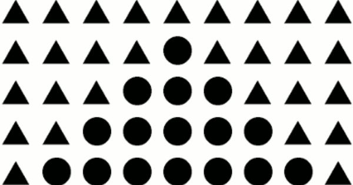Continuation

Alignment

Proximity
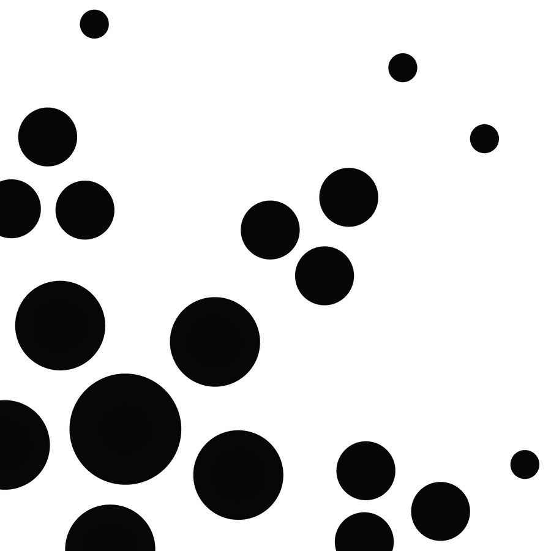Zollner Illusion
Café Wall Illusion

Gradient Illusion

Inside-Outside Illusion
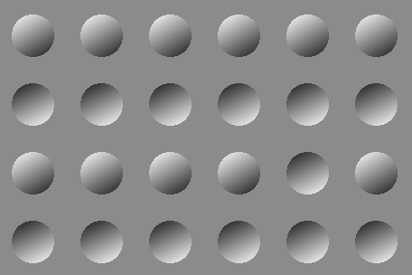Mond-Vergleich Illusion

Poggendorff Illusion
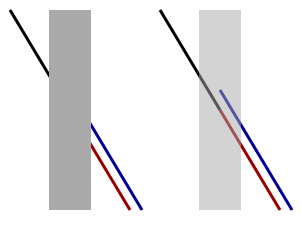Hermann Grid

Kuiper’s 3-in-1 Illusion
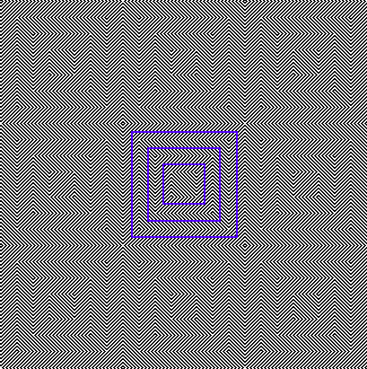Spinning Dancer Illusion

Color Theory
Color Theory is a broad topic, into which we will not delve too deep. The main areas we will cover are:
- Colors and their meaning
- Terminology
- Developing Schemes
Take this lecture with a pinch of salt; Color theory is a very broad area, and quite subjective. An individuals response to color will be dependent upon many factors including cultural background and personal experiences.
RYB Color Star - Color Theory
Warm Colors
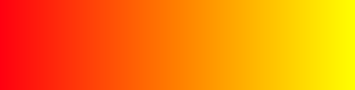Warm Colors - Reg, Orange, Yellow
- Warm colors are a blend of two primary colors, Red and Yellow.
- Evokes Energy, Enthusiasm and Passion, Comfort
- Evokes sunrise, sunset, autumn,
Red (Primary) - Color Theory
- Fire, Danger, Anger
- Also, prestige such as Red Carpet, or Help such as Red Cross or Red Crescent
Orange (Secondary) - Color Theory
- Vibrant and Energetic
- Autumn, Sunset, Sunrise, Health (fruit), Wood, Earth
- More subtle than Red or Yellow
Yellow (Secondary) - Color Theory
- Bright, Lively, Clean, Fresh
- Most Energetic; Happiness, Crazy? Van Gogh
- Cowardly, or Loss (yellow ribbon)
Cool Colors
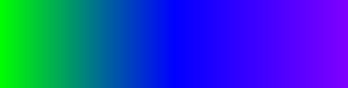Cool Colors, Blue, Green, Violet
- More subdued than warm colors
- Water, Nature, Calming and Relaxing
- Use for a sense of professionalism, control, ease
Blue (Primary) - Color Theory
- Considered the least offensive web color
- Facebook, Twitter, GE, SAP, Samsung, BOI
- Dark Blue, strong reliable; Bright Blue, fresh clean;
- Cold?
Green (Secondary) - Color Theory
- Fresh, Nature, Life, Renewal
- Green with envy? feeling a bit Green?
Violet (Secondary) - Color Theory
- Royalty, Prestige, Strength, Honor
- Creativity, Imagination
Neutral Colors - Color Theory
- Grays, Beiges, Black, White
- Often used to create unobtrusive backgrounds
Neutral Colors - Color Theory
- Black is the strongest of the neutrals
- Very versatile, can be elegant or loud
- Sophistication (Black Tie)
- White, clean pure, minimalist, goes with everything
Neutral Colors - Color Theory
- Conservative, Formal, Unimaginative
- Very useful for muting text
- Dark grays can be quite elegant
- Light grays can replace white backgrounds and add more solidity to a design
Neutral Colors - Color Theory
- Hints of nature and warmth without over commitment (boring?)
- Brown can be warm and inviting
- Beige can take on the warmth or coldness of the surrounding colors
Beige Example - Color Theory
- Color Temperature of Beige
- Tends to take on warmth or coolness of adjacent colors
Hue - Color Theory

Hue from Red to Violet as used on Inkscape controls
The color such as Red, Green, Blue, Orange etc.
Saturation - Color Theory
- It is a measure of how pure a color is.
- What we call 'Red' exists between wavelengths of 620 and 750 nm. So, red colored objects typically reflect a variety of wavelengths within this range. If we have a particular red that is reflecting, say, 80\%\footnote{this is a simplification} of the total refleced light at a wavelength of 680nm, then we say that the color is hightly saturated; the most prominant color is the 680nm red.
- The problem is that graphics software have implemented something else. For many color model systems, such as HSL, it is closer to chroma.
Value - Color Theory
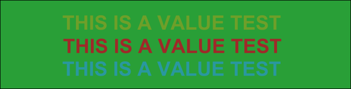| Background | 90,150,100 HSL |
| Upper Text | 60,150,100 HSL |
| Middle Text | 0,150,100 HSL |
| Lower Text | 130,150,100 HSL |
The objects in the image above all have the same saturation and lightness. Only the hue has changed. Objects of similar value (lightness) do not contrast well.
Tone - Color Theory
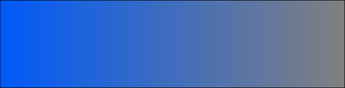Tones created by adding gray to a base hue
Tone is how much grey has been added to a hue
Shade - Color Theory
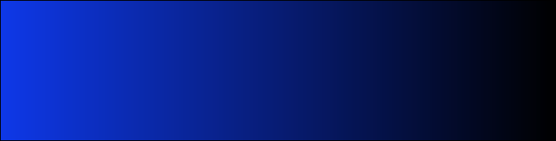Shades created by adding black to a base hue
Shade is how much black has been added to a hue
Tint - Color Theory
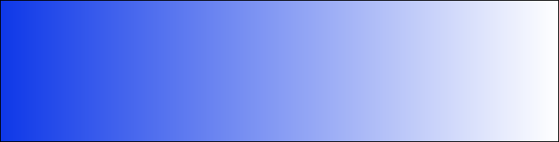Tint created by adding white to a base hue
Tint is how much white has been added to a hue
Chroma - Color Theory
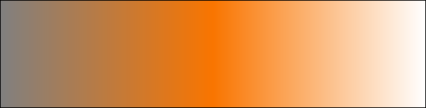Chroma - combines a number of other measures
A measure of how much black, white or gray is in a color. A high chroma color contains little black, white or gray, whereas a low chroma color contains higher levels of black and white and may look closer to gray than any given hue.
Defining Color
Numerous color schema exist. The most common are:
| RGB(a) | Red, Green, Blue, Alpha |
| HSL | Hue, Saturation, Lightness |
| HSV | Hue, Saturation, Value |
| CMYK | Cyan, Magenta, Yellow, Black (Key) |
These systems are usually interchangeable. The most common format for Web design is RGB in Hex values
Defining Color - CSS Good Practice
It is a good idea to place your color scheme in comments at the start of your CSS.
/*
Main Headings:
HSL(143,82%,17%)
RGB(8,79,35)
Hex #084F23
Subheadings:
HSL(72,54%,30%)
RGB(101,117,35):
Hex #657523
*/
Color Schemes
The most common color schemes are:
- Monochromatic
- Complement
- Triad
- Analogic
- Accented Analogic
Monochromatic

Different tones, shades and tints of a single hue. Usually the easiest to develop for beginners.
Complement

Addition of an additional hue from the opposite side of the color wheel.
Triad

Three hues are selected at 120$\deg$ intervals on the color wheel.
Analogic

Three hues are selected at regular intervals on the color wheel, not necessarily 120$deg$. Usually much closer
Analogic Low Saturation

Accented Analogic

Simple Palets

Simple Palets

Very simple and effective. Based on 20\% intervals on the alpha channel, and a hue of choice.
Simple Palets

Very simple and effective. Based on 20\% intervals on the alpha channel, and a hue of choice.
Color Blindness
There are three main types of color blindness
- T1 Protanopia
- T2 Deuteranopia
- T3 Tritanopia
The following simulations are driven by daltonize.org
Type 1
Image Source https://pixabay.com/en/modern-art-fractal-background-971594/
Type 2
Image Source https://pixabay.com/en/modern-art-fractal-background-971594/
Type 3

Image Source https://pixabay.com/en/modern-t-fractal-background-971594/
Tips and Tricks
- Don't overuse color. Simple is often more effective
- Use Web-Safe Colors
- Test for Color Blindness
- Provide good contrast for text
- Spend time on it!
Questions?
Navigation
- Hierarchical
- Linear
- Random
Hierarchical Navigation
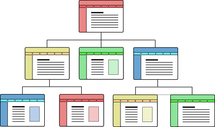- Clearly defined Home page
- Nav links to major sections, sections have sub-menus
- Most common approach
Hierarchical Navigation
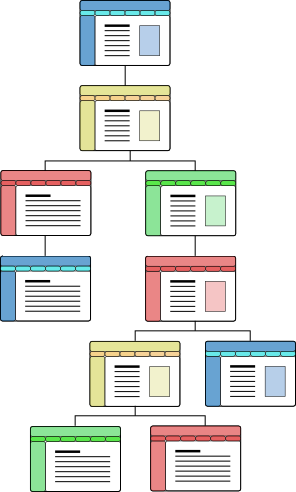- Be careful not to go too deep
- 3-click rule: Users should be able to get to get from any point on your site to another point using a maximum of 3 clicks
Hierarchical Navigation
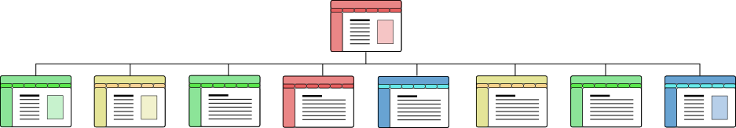- Too Shallow
- 7 $\pm$2 Principle (George Armitage Miller)
Linear Navigation

- Used for sequential viewing
- Typical of on-line purchase stages
Random Navigation
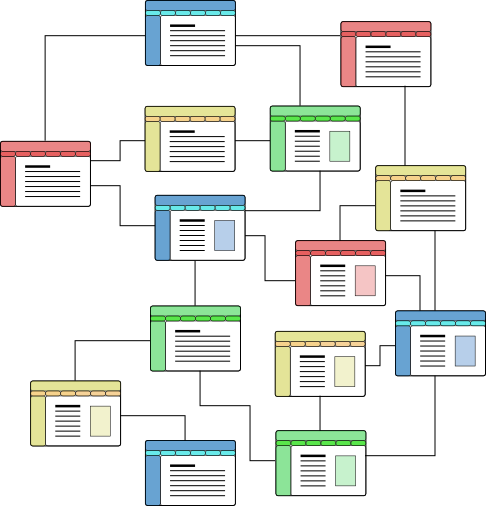- Rarely used on anything other than concept sites
- Not appropriate in most cases
- Requires users to explore site; takes time
- Hard to find examples (\href{http://www.shmarketing.co.uk/}{http://www.shmarketing.co.uk/})
Content Organization Schemes
- Exact Organization Schemes
- Alphabetical schemes
- Chronological schemes
- Geographical schemes
- Subjective Organization Schemes
- Topic schemes (History, Science, etc.)
- Task schemes (browse, purchase, etc.)
- Audience schemes (demographics)
- Metaphor schemes (trash can, folders, etc.)
Consider
- Navigation Bar: consistent placement
- Breadcrumbs: Home$>$News$>$Latest News
- Site Map: Needed for indexing anyway
- Site Search: Powered by Google?
Design for Accessibility
- HTML5 nav, article etc.
- Alternative Text for Images (Visual Impairment)
- Keyboard Input (Motor Skills)
- Transcripts of Audio (Hearing Impairment)
- Closed Captions for Video (Hearing Impairment)
- Balance Images and Text (ADHD)
- Multi-Column Text (ADHD)
- Adjust Text Size (Visual Impairment)
- Consistent and Predictable Functionality (all)